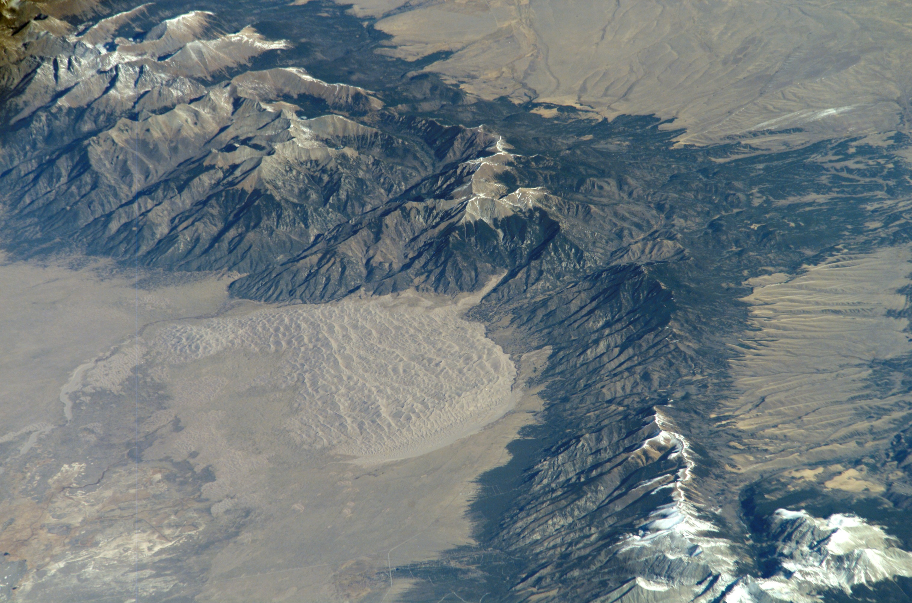

An investigation of mechanical and chemical weathering, downslope mass movement, fluvial erosion, aeolian processes, deserts, and glacial dynamics across the United States.
1. Weathering and Mass Wasting
The landscapes of the United States are constantly reshaped by exogenic forces that break rock down in place (weathering) and transport it downslope under the direct influence of gravity (mass wasting).
Chemical & Mechanical Weathering Processes
Carbonation & Karst Landscapes: Rainwater absorbs atmospheric carbon dioxide to form weak carbonic acid (H2CO3), which dissolves carbonate bedrock such as limestone (CaCO3). This process has carved extensive subterranean karst networks across the eastern and central U.S., including Mammoth Cave in Kentucky (the world's longest cave system) and the sinkhole-prone karst plains of central Florida.
Hydrolysis: Acidic groundwater reacts with common silicate minerals. In the Appalachian Piedmont and Sierra Nevada batholiths, hydrolysis alters hard potassium feldspar within granite into soft kaolinite clay minerals, fundamentally destabilizing bedrock and forming thick residual saprolite soils.
Mechanical Frost Wedging: In alpine zones across the Rocky Mountains, Cascades, and Sierra Nevada, liquid water penetrates rock joints, expands by roughly 9% upon freezing, and shatters cliffs into angular debris, accumulating large talus slopes (scree fields) along mountain bases.
Figure 1: Aerial view of the 2014 Oso Landslide along the Stillaguamish River in Washington State, showcasing rapid slope liquefaction and flow mobilization.
Figure 2: Historic Harold Fisk / USACE cartographic survey of dynamic Mississippi River meander loops and oxbow cutoffs, illustrating continuous lateral migration.
Major Historical Event: The 2014 Oso Landslide
On March 22, 2014, near Oso, Washington, an unstable slope consisting of unconsolidated glacial till and lacustrine clay catastrophically collapsed after weeks of abnormally heavy precipitation. The failure mobilized approximately 18 million tons of saturated earth into a fast-moving, liquefied debris flow that crossed the North Fork Stillaguamish River at speeds up to 40 mph. The slide completely buried the Steelhead Haven neighborhood, destroyed 49 homes, killed 43 people, and severed State Route 530, making it the deadliest single landslide disaster in United States history (Keaton et al., 2014).
Government Hazard Mitigation
In direct response to the Oso disaster, federal and state agencies enacted comprehensive slope stability measures:
National Landslide Preparedness Act (2021): Congress established an integrated national program led by the U.S. Geological Survey (USGS) to identify, map, and assess landslide risks nationwide.
USGS 3D Elevation Program (3DEP): Employs high-resolution airborne LiDAR scanning to penetrate dense forest canopies, revealing historical scarps, hummocky landslide deposits, and active creeping bluffs before catastrophic failure occurs.
Local Land-Use Ordinances: County and municipal zoning codes now restrict building and septic installation along designated steep slope hazard areas, requiring geotechnical engineering setbacks and automated groundwater pore-pressure sensors on active slide zones.
2. Water Erosion & Major River Systems
Water is the primary agent of erosion across North America. While localized processes—such as raindrop splash, sheet wash, and rill/gully formation—degrade agricultural hillsides, major river systems perform massive regional geomorphic work through hydraulic action, abrasion, and sediment transport.
Comparative Case Studies: Mississippi vs. Colorado Rivers
River System
Source & Length
Mean Discharge
Channel Geometry
Delta & Outlet
Mississippi River
Lake Itasca, MN ~2,340 miles (3,766 km)
~593,000 ft³/s (16,800 m³/s)
Low-gradient, highly meandering with oxbow cutoffs, natural levees, and expansive floodplains
Bird-foot delta (Balize Delta) discharging into the Gulf of Mexico
Colorado River
Rocky Mountain Nat'l Park, CO ~1,450 miles (2,330 km)
~22,000 ft³/s (historic, now depleted)
High-gradient, deeply incised bedrock canyons (entrenched meanders like Horseshoe Bend)
Colorado River Delta at the Gulf of California (largely desiccated by diversions)
Socioeconomic Impacts of River Erosion
River erosion presents constant challenges to American infrastructure. Along the Lower Mississippi River, lateral channel migration relentlessly erodes outer cutbanks, undermining agricultural property, highways, and industrial ports. If unengineered, the Mississippi would naturally divert its course into the steeper Atchafalaya River basin, cutting off the industrial ports of Baton Rouge and New Orleans from global commerce. Along the Colorado River, massive bedrock incision created the Grand Canyon, but upstream reservoir retention behind Hoover and Glen Canyon dams traps over 95% of native sediments, leading to downstream sandbar starvation and ecological loss.
Government River Mitigation
The U.S. Army Corps of Engineers (USACE) manages riverbank erosion through extensive structural programs:
Articulated Concrete Mattress Revetments: Large interconnected concrete slabs laid along Mississippi cutbanks to prevent river currents from undermining earthen levees.
Old River Control Structure: A complex floodgate facility operated by USACE that mechanically prevents the Mississippi from avulsing into the Atchafalaya River.
Riprap & Riparian Buffers: Placement of heavy basalt/granite rock armor along eroding banks, coupled with USDA-NRCS programs subsidizing planted willow and cottonwood riparian zones to bind soils naturally.
3. Wind Erosion & Aeolian Dynamics
Wind (aeolian) erosion occurs primarily in semi-arid and arid agricultural regions where topsoil lacks dense vegetative cover and protective soil moisture.
The Dust Bowl Crisis
The most severe wind erosion disaster in U.S. history occurred during the 1930s Dust Bowl across the Great Plains (Oklahoma, Texas, Kansas, Colorado). Severe multidecadal drought combined with aggressive deep plowing of native prairie grasses exposed dry topsoil to high plains winds. Intense dust storms ("black blizzards") stripped millions of tons of fertile topsoil, displaced hundreds of thousands of farmers, and created an acute economic and public health catastrophe during the Great Depression.
Federal Mitigation Strategies
In response, the federal government revolutionized agricultural soil mechanics by creating the Soil Conservation Service (SCS) in 1935, now known as the Natural Resources Conservation Service (NRCS):
Shelterbelts & Windbreaks: Under the Great Plains Shelterbelt project, millions of trees were planted in linear rows perpendicular to prevailing winds, lifting surface winds and reducing boundary-layer shear stress across open fields.
Conservation Tillage: Promoting no-till and low-till practices that leave crop residue (stubble) anchored in fields year-round to trap fine particles and retain organic moisture.
Conservation Reserve Program (CRP): Administered by the USDA, this initiative pays agricultural producers annual rental payments to retire highly erodible cropland from active production and replant permanent native perennial grasses.
4. Deserts and Desertification
Approximately 30% of the contiguous United States is arid or semi-arid, heavily influenced by rain shadows cast by the western mountain cordillera and subtropical high-pressure descending air cells.

Figure 3: Massive transverse sand dunes (erg landscape) backed by the Sangre de Cristo Mountains at Great Sand Dunes National Park, Colorado.
Figure 4: Grinnell Glacier and its proglacial lake in Glacier National Park, Montana, exhibiting pronounced 21st-century terminus retreat.
The Four Major North American Deserts
Great Basin Desert (Cold Desert): A northern high-elevation desert located between the Sierra Nevada and Wasatch Range. Characterized by hamada (barren rocky mountain ranges) and wide valleys featuring reg (gravelly desert pavement) and playa mud flats, dominated by cold-tolerant sagebrush.
Mojave Desert (Warm/Transition Desert): Spanning southern California, Nevada, and northwestern Arizona; contains Death Valley (the lowest elevation in North America at -282 ft). Displays vast reg alluvial fans (bajadas), rocky hamada massifs, and localized erg dunefields such as the Kelso Dunes. Characterized by the native Joshua tree (Yucca brevifolia).
Sonoran Desert (Subtropical Desert): Located across southern Arizona and southeastern California. Known for warm winters and bimodal rainfall supporting diverse columnar cacti (Saguaro). Includes extensive sand seas (erg) like the Algodones/Imperial Sand Dunes alongside broad gravelly bajadas (reg).
Chihuahuan Desert (High-Elevation Desert): Centered in New Mexico and west Texas. Dominated by limestone hamada plateaus, desert scrub reg, and unique gypsum sand seas (erg) preserved at White Sands National Park.
Desertification Threats: Ongoing multidecadal megadroughts in the American Southwest, coupled with severe over-allocation of the Colorado River and overpumping of fossil groundwater from the Ogallala Aquifer, are accelerating desertification. Invasive species like cheatgrass fuel repetitive wildfires that replace native biomes with barren, easily erodible dust sources, generating dangerous regional dust storms (haboobs) across Arizona and Utah.
5. Glacial Dynamics: Ancient & Modern
Glaciation has exerted profound control over North American topography, sediment distribution, and freshwater reserves.
Ancient Pleistocene Glaciation
During the Pleistocene Epoch (culminating in the Last Glacial Maximum ~20,000 years ago), the massive Laurentide Ice Sheet and mountain-bound Cordilleran Ice Sheet covered roughly half of North America down to the modern Ohio and Missouri river valleys:
The Great Lakes Basin: Deep glacial lobes gouged out ancient river valleys; as ice retreated, meltwater filled these depressions to form the largest collective freshwater body on the planet.
Glacial Till & Soil Fertility: Receding glaciers dumped massive terminal and recessional moraines alongside fertile unsorted ground till, laying down the nutrient-rich geological foundation for the Midwestern agricultural Corn Belt.
Kettle Lakes & Eskers: Landscapes across Minnesota, Wisconsin, and upstate New York are densely pocketed with kettle lakes formed where detached blocks of stagnant ice melted within glacial outwash plains.
Current Glaciers & Modern Impacts
Today, the United States contains tens of thousands of glaciers, overwhelmingly concentrated in Alaska (e.g., the Malaspina piedmont glacier, Hubbard tidewater glacier, and Columbia glacier), with several hundred alpine glaciers persisting in Washington's Cascade Range, Wyoming's Wind River Range, Montana's Glacier National Park, and the Colorado Rockies.
Hydrologic Buffering: Alpine glaciers act as natural frozen reservoirs, slowly releasing cold meltwater during dry late-summer months to maintain municipal supplies and sustain salmon spawning rivers.
Rapid Glacial Retreat: Rising mean global temperatures have triggered unprecedented glacial shrinkage. In Glacier National Park, Montana, the number of named glaciers larger than 25 acres has plummeted from roughly 150 in 1850 to fewer than 25 today (USGS, 2023). Rapid retreat destabilizes steep fjord slopes, causing catastrophic rockslides and generating local displacement tsunamis in Alaskan waterways.
The following educational documentary from the U.S. Geological Survey outlines the primary triggers of mass wasting events nationwide, including rainfall saturation, soil mechanics, and federal monitoring networks:
Video Source: U.S. Geological Survey — Landslide Hazards and Slope Stability Monitoring.
References (APA Format)
Google. (2024). Gemini (Large language model). https://gemini.google.com/ [AI disclosure: Utilized to outline geomorphic themes, format responsive HTML/CSS markup, and structure APA bibliographies; all geophysical metrics verified against USGS and NRCS research].
Keaton, J. R., Wartman, J., Anderson, S., Benoit, J., deLaChapelle, J., Gilbert, R., & Montgomery, D. R. (2014). The 22 March 2014 Oso landslide, Snohomish County, Washington (Geotechnical Extreme Events Reconnaissance Report GEER-036). National Science Foundation. https://doi.org/10.18118/G6H018
Natural Resources Conservation Service. (2020). Soil health and wind erosion mitigation on agricultural lands. U.S. Department of Agriculture. https://www.nrcs.usda.gov/
Tarbuck, E. J., Lutgens, F. K., & Tasa, D. G. (2020). Earth: An introduction to physical geology (13th ed.). Pearson.
U.S. Army Corps of Engineers. (2021). Mississippi River and tributaries project: Channel improvement and revetment operations. Mississippi Valley Division. https://www.mvd.usace.army.mil/
U.S. Geological Survey. (2020). The 3D Elevation Program (3DEP): High-resolution lidar mapping for landslide hazard identification. U.S. Department of the Interior. https://www.usgs.gov/3dep
U.S. Geological Survey. (2023). Glacier retreat in Glacier National Park, Montana. Northern Rocky Mountain Science Center. https://www.usgs.gov/centers/norock/science/retreat-glaciers-glacier-national-park